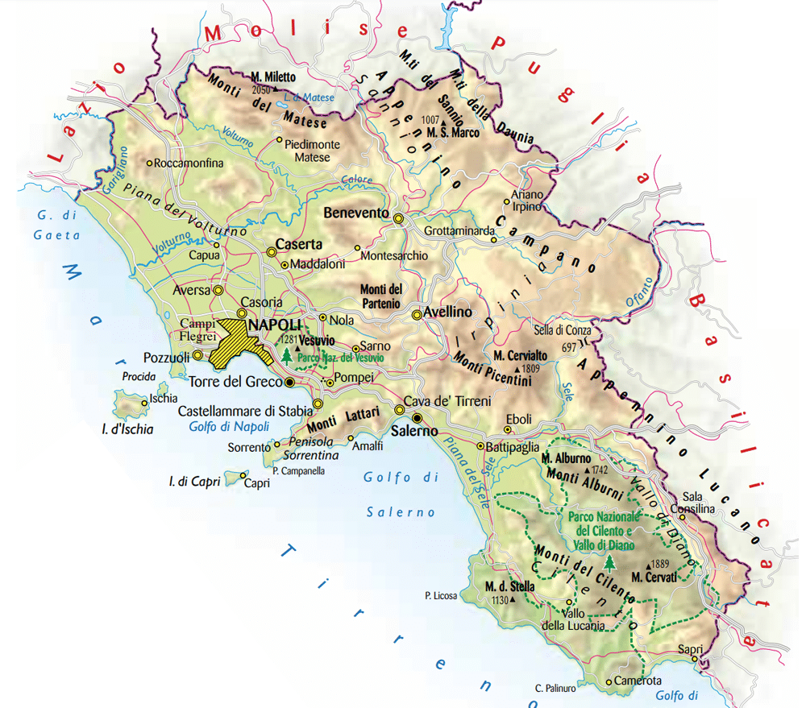
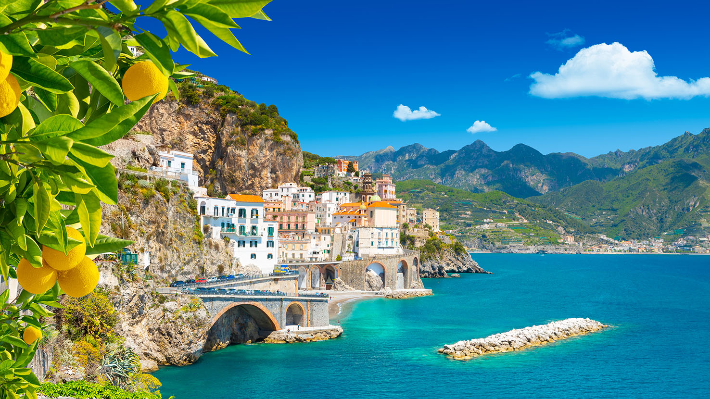

| Nome |
Campania |
| Capoluogo |
Città metropolitana di Napoli (NA) |
| Data di Istituzione |
1948 |
| Altitudine media |
322 m.s.l.m |
| Superficie |
13671 km^2 |
| Abitanti (agosto 2023) |
5.574.936 |
| Densità |
407 ab/km^2 |
| Comuni |
330 |
| Province |
Avellino (AV) - Benevento (BN) - Caserta (CE) - Salerno (SA) |
| Confini |
Basilicata, Lazio, Molise, Puglia, Mar Tirreno |
| Patrono |
San Gennaro, San Paolino |
| PIL procapite (2017) |
18.500€ |
Posto da visitare assolutamente: Costiera Amalfitana - Provincia di Napoli (NA)
La Costiera Amalfitana è una delle destinazioni costiere più celebri e affascinanti
d'Italia. Situata nella regione della Campania, nel sud del paese,
la Costiera Amalfitana si estende lungo la costa tirrenica, offrendo paesaggi mozzafiato,
città pittoresche e una ricca storia culturale.
Ecco alcuni aspetti salienti di questa meravigliosa zona:
Città principali:
La Costiera Amalfitana comprende diverse città costiere,
tra cui Amalfi, Positano, Ravello, Maiori e Minori.
Ognuna di queste località ha il suo carattere unico e offre esperienze diverse ai visitatori.
Amalfi:
Amalfi è il centro storico e culturale della costiera.
La Cattedrale di Sant'Andrea, il Chiostro del Paradiso e la Valle
delle Ferriere sono solo alcune delle sue attrazioni.
La città è stata un'antica repubblica marinara e conserva un'atmosfera storica
affascinante.
Positano:
Positano è famosa per le sue case colorate che si arrampicano
sulla collina in modo spettacolare. La spiaggia di Fornillo e
la spiaggia principale di Positano sono luoghi popolari per rilassarsi e godere del mare.
Ravello:
Ravello è situata in posizione elevata, offrendo viste panoramiche incredibili sulla costa.
Villa Rufolo e Villa Cimbrone sono due famose ville con giardini spettacolari
che attirano visitatori da tutto il mondo.
Paesaggi spettacolari:
La Costiera Amalfitana è caratterizzata da ripide scogliere,
terrazzamenti coltivati a limoni, piccoli villaggi di pescatori e baie nascoste.
La bellezza del paesaggio rende ogni angolo di questa costa un'opera d'arte naturale.
Strade panoramiche:
La Strada Statale 163 Amalfitana è una delle strade costiere più famose del mondo.
Si snoda attraverso i villaggi della costa, offrendo viste panoramiche mozzafiato.
La guida lungo questa strada è un'esperienza unica, ma richiede attenzione a causa
delle sue curve strette.
Cucina locale:
La cucina della Costiera Amalfitana è rinomata per la sua freschezza e autenticità.
I piatti locali includono specialità a base di pesce, pasta fatta in casa,
limoni Amalfitani e dolci tradizionali come la sfogliatella.
Attività ricreative:
Oltre a godere delle spiagge, ci sono numerose attività ricreative disponibili,
tra cui escursioni a piedi lungo i sentieri della zona,
gite in barca per esplorare le grotte marine e visite alle ville storiche.
La Costiera Amalfitana è una destinazione che incanta i visitatori con la sua bellezza,
il suo patrimonio storico e la sua cucina deliziosa.
È un luogo ideale per una vacanza romantica, ma attrae anche coloro che desiderano
immergersi nella cultura e nella natura straordinaria della regione.
